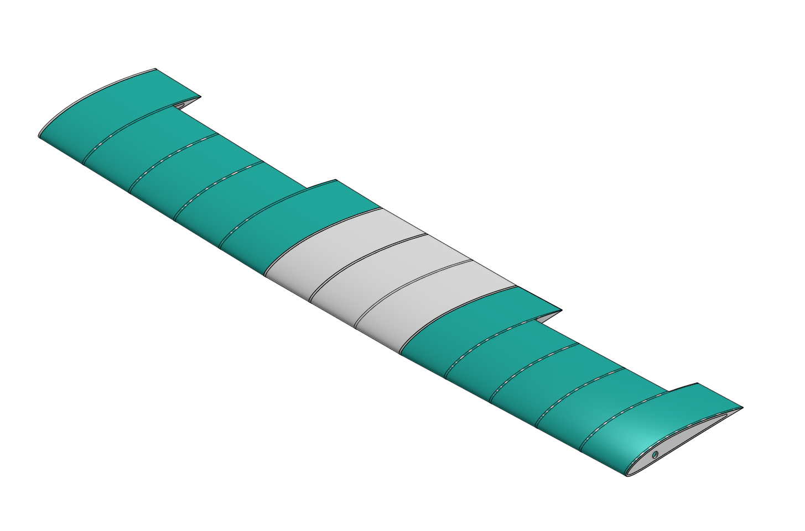
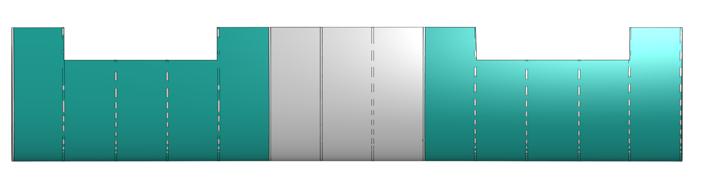
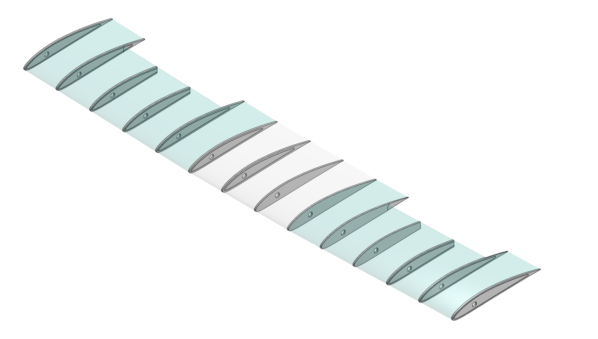
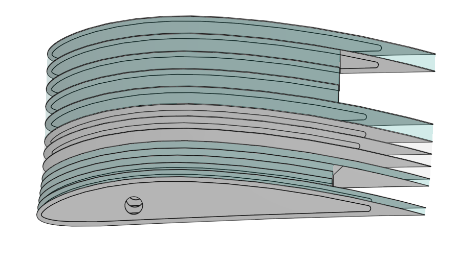

Twin-Boom Autonomous UAV: Aerostructural Sizing and Design
Overview
Every major number in this wing was derived, not chosen. The 650 mm span, the 16 m/s cruise speed, the 142k Reynolds number at that cruise: none of these were picked as targets and worked backward from. They fell out of pinning down the constraints that actually mattered (hand-launch capability, a wingspan limit, and the geometry already committed to in CAD) and letting the rest follow.
Where we started
The starting point was not a spreadsheet. It was a review of basic drone archetypes: what missions they were built for, and why their configurations looked the way they did. That review, not a target aircraft, is what drove every configuration decision that followed.
Twin motors, tractor and pusher, came directly out of it. A conventional twin-motor layout with one prop on each wing creates yaw asymmetry the moment thrust differs between the two motors. Placing both motors on the centreline instead, one pulling at the nose and one pushing at the tail, removes that asymmetry entirely.
The twin-boom fuselage followed from that decision, not the other way around. It was the structural answer to physically clearing a pusher propeller of the tail, something a conventional single-boom fuselage cannot do without shortening the tail moment arm or fouling the prop disc.
A high elevator kept the horizontal stabiliser out of the pusher propeller's wake, avoiding degraded control effectiveness from disturbed flow over that surface. Twin rudders, one on each boom, added the yaw control authority the twin-boom layout made available, rather than relying on a single fin.
From configuration to numbers
With the configuration fixed, the next step was putting numbers to it. A sizing spreadsheet with rough estimates sat alongside CAD that already showed the twin-boom fuselage, high elevator, and twin rudders. The spreadsheet's wingspan came out at 743 mm, too large for the platform. Weights throughout were placeholder estimates rather than numbers grounded in what the CAD actually showed. The goal from here was to replace every estimate with a number that was either measured from the CAD or derived from a real constraint.


Design decisions
Rather than designing toward the maximum takeoff weight, the aircraft was sized to whatever it actually weighed once every component was accounted for, with 750 g held as a hard limit it had to stay under.
Rather than picking a cruise speed and checking whether it worked, cruise was derived as the fastest speed the design could sustain while keeping hand-launch speed at or below a 12 m/s threshold, arriving at 16 m/s.
No wing taper
Tapering was considered early on but never had a strong justification behind it. A rectangular planform was selected, which simplifies the build without giving up meaningful performance at this scale.
Rib pitch at 50 mm
An initial 15 mm spacing would have meant 44 ribs, adding unnecessary weight for no structural benefit at this span. Fifty millimetres is a conventional pitch that still supports the skin properly.
A zero-dihedral critique aimed at racing wings did not apply here: this is a hand-launched autonomous platform, not a racer, so 2 to 3 degrees of dihedral was retained for stability. The one part of that critique worth keeping was washout, added at roughly 2 degrees tip to root.
Structure simplified
The wing settled on a single 6 mm carbon spar rather than two, a balsa trailing-edge strip instead of a second carbon rod, D-box sheeting for torsional stiffness, and plywood reserved only for the three highest-load ribs.


The section at cruise
The wing uses the NACA 4412. Below, a Joukowski section matched to its 4% camber and 12% thickness shows how the flow speeds up over the upper surface and slows beneath it as angle of attack rises. That pressure difference is the lift the sizing depends on.
Where it landed
| Aircraft | Value | Note |
|---|---|---|
| Takeoff weight | ~529 g | Under the 750 g ceiling |
| Configuration | Twin-boom, tractor + pusher | High elevator, twin rudders |
| Wing | Value | Note |
|---|---|---|
| Planform | Rectangular, 650 × 130 mm | No taper |
| Aspect ratio | 5.0 | Rectangular, no taper |
| Aerofoil | NACA 4412 | Validated at cruise Re |
| Dihedral | 2 to 3 degrees | Retained for stability |
| Washout | ~2 degrees, tip to root | Added to the design |
| Ribs | 14 balsa, 3 plywood | 50 mm pitch, plywood at high-load stations |
| Main spar | Single 6 mm carbon | At 25% chord |
| Trailing edge | Balsa strip | D-box sheeting forward of spar |
| Ailerons | Outer 40% each half | Control surfaces |
| Covering | Heat-shrink film | Skin finish |
| Estimated mass | ~51 g | Wing only |
| Performance | Value | Note |
|---|---|---|
| Cruise speed | 16 m/s | ~57 km/h |
| Stall speed | ~10 m/s | Estimated |
| Hand-launch target | ~12 m/s | Sets the cruise margin |
| Reynolds number at cruise | 142,000 | Inside the validated NACA 4412 data range |
| Cruise power | ~22 W total | ~11 W per motor |
| Estimated endurance | ~36 minutes | Estimated |
Status
This is a design-and-sizing milestone, not a completed aircraft. Structure, sizing, and configuration are finalised in CAD; nothing has been physically built yet. Next phases are OpenVSP aerodynamic validation, ANSYS structural FEA on the spar and rib layout, and prototype fabrication with ArduPilot integration.
The through-line
Nothing here was chosen because it looked reasonable. Every number traces back to a constraint: hand-launch speed sets cruise, cruise sets Reynolds number, the wingspan limit sets aspect ratio, and the CAD-visible fuselage geometry set the motor layout before any of the wing sizing began. That ordering, constraints first and numbers derived second, is the actual design process behind this aircraft, not just its result.
All projects